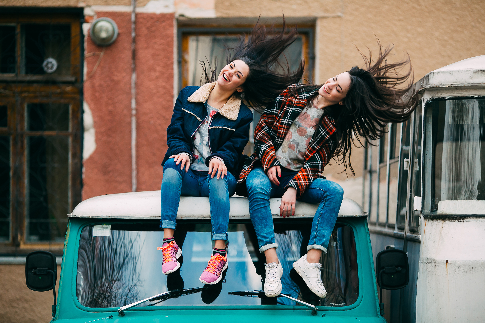

We Are Outfitted,
a Milwaukee re-sale shop ran by Martin Gil.
Martin hand-picks each item and prepares them for their next home. Each item is chosen and handled with care, becasue Martin knows how valuable and unique each piece is. His passion for recycling clothes in the market helps fashion trends live and be loved longer.


Outfitted does their part to slow down fast-fashion trends and appreciate the things we already have.
What started out as a personal hobby, Martin has turned into his own vision of sharing trendy and unique clothing articles into a business.
Outfitted was established in 2017 when Martin realized his passion for thrifting and selling cool clothes. Starting out on social media sales, Martin has expanded Outfitted down the path of becomming bigger and better for more people.
Get outfitted by Martin Gil>
